The Tracer
The Tracer is a visual debugging aid that allows you to step through an application line by line. During a Trace you can track the path taken through your code, display variables in edit windows and watch them change, skip forwards and backwards in a function. You can cutback the stack to a calling function and use the Session and Editor to experiment with and correct your code. The Tracer may be invoked in several ways as discussed below.
Tracing an expression
Firstly, you may explicitly trace an expression that executes one or more defined functions or operators by typing the expression then pressing Ctrl+Enter (<TC>) or by selecting Trace from the Action menu. This lets you step through the execution of an expression from the beginning.
In the same way as when you execute a statement by pressing Enter, the expression is (if necessary) copied down to the input line and then executed. However, if the expression includes a reference to an unlocked defined function or operator, execution halts at its first line and a Trace window containing the suspended function or operator is displayed on the screen. The cursor is positioned to the left of the first line which is highlighted.
Naked Trace
The second way to invoke the Tracer is when you have a suspended function in the state indicator and you press Ctrl+Enter (<TC>) on the empty input line. This is termed naked trace. The same thing can be achieved by selecting Trace from the Action menu on the Session Window.
The effect of naked trace is to open the Tracer and to position the cursor on the currently suspended line. It is exactly as if you had traced to that point from the Input Line expression whose execution caused the suspension.
Automatic Trace
The third way to invoke the Tracer is to have the system do it automatically for you whenever an error occurs. This is achieved by setting the Show trace stack on error option in the Trace/Edit tab of the Configuration dialog (Trace_on_error parameter). When an error occurs, the system will automatically deploy the Tracer. This means that when an error occurs, the Trace window will then receive the input focus and not the Session window.
Tracer Options
From Version 10.1 onwards, the Tracer is designed to be docked in the Session window.
In previous versions of Dyalog, the Tracer was implemented as a stack of separate windows (one per function on the calling stack) or as a single, but still separate, window.
There are three available layout modes (each of which can be adjusted and configured). They are available under the Debugger Layout menu:
- Floating
- At the bottom
- On the left
The layout is a matter of preference; the functionality is the same. The default behaviour is Debugger at the bottom.
The Floating layout mode detaches the Tracer window, allowing it to be positioned according to preference.
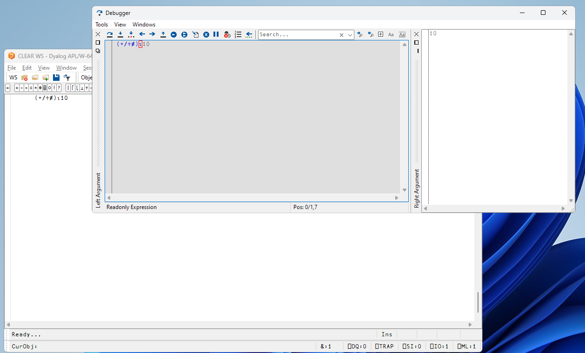
The At the bottom layout mode:
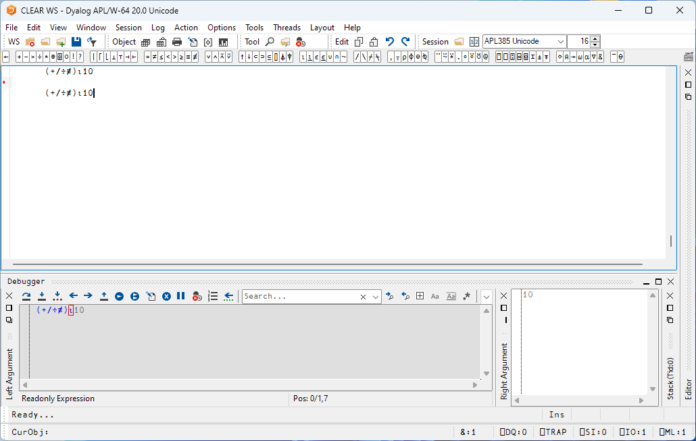
The To the left layout mode:
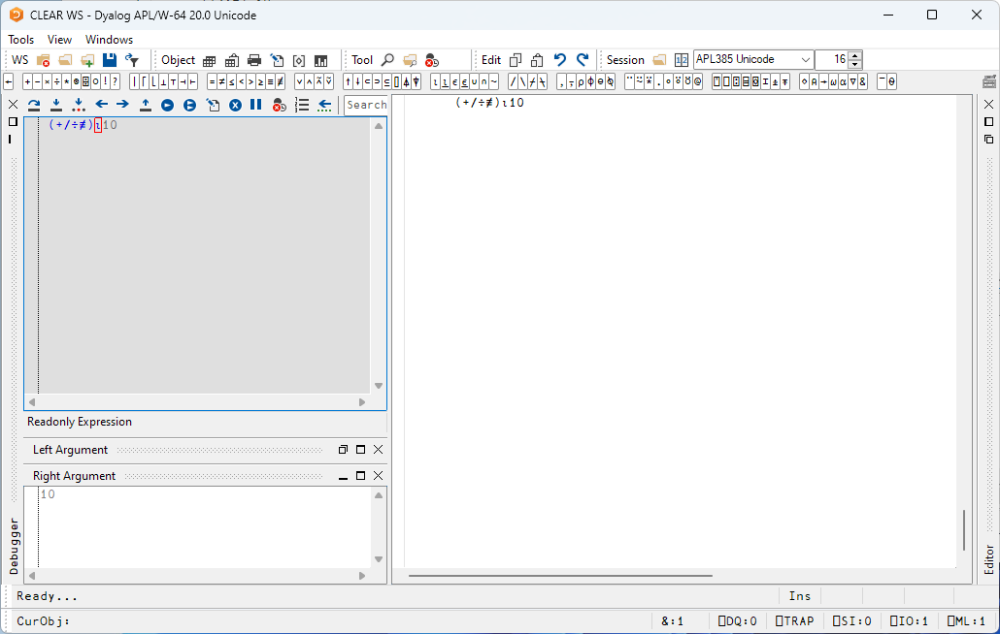
In the latter two layout modes, the Tracer is docked into the main window.
In Floating mode,
- The trace window contains a combo box whose drop-down displays the contents of the SI stack. This box is not provided if there are multiple trace windows.
- The trace window is re-used when tracing into, or returning from, a called function. This means that there is never more than one trace window present.
- When the last function in a traced suspension exits, the trace window disappears.
- If you click the Quit this function button in the Trace Tools window, or press Esc, the current function is removed from the stack and the trace window reused to display the calling function if there is one.
- If you move or resize the trace window, Dyalog APL remembers its position, so that it reappears in the same position when next used.
The Trace Window
The Tracer is implemented as a single dockable window that displays the function that is currently being executed. There are several subsidiary information panes which are also fully dockable. The first of these (SIStack) displays the current function calling stack; the second (Threads) displays a list of running threads.
There are also two docked, but minimised panes, named Left Argument and Right Argument. They will open up automatically if you trace inline.
In the default Session files, the Tracer is docked along the bottom edge of the Session window. When you invoke the Tracer, it springs up as illustrated below. In this example, the function being traced is ⎕SE.UCMD, which is invoked by typing a user-command, in this case ]APLCart.
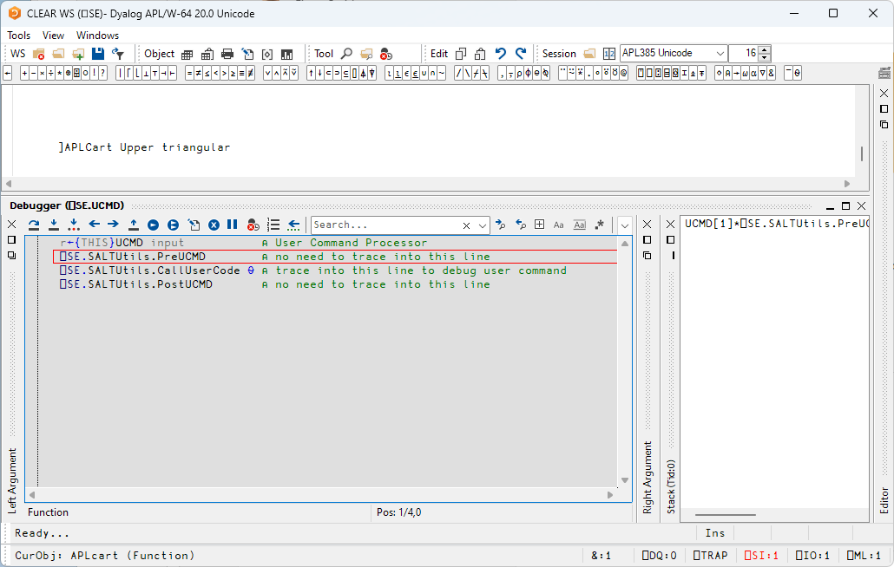
In the default layout, the SIstack window is displayed alongside the main Tracer window, although this can be hidden or made to appear as a separate floating window, as required.
Trace Tools
The Tracer can be controlled either from the keyboard or by using the Trace Tools that are arranged along the title bar of the Debugger window. The button names are solely for reference purposes in the description that follows.
| Button | Name | Key Code | Keystroke | Description |
|---|---|---|---|---|
| Exec | <ER> | Enter | Execute expression | |
| Trace | <TC> | Ctrl+Enter | Trace expression | |
| Inline Trace | <IT> | Ctrl+Alt+Enter | Trace inline | |
| Back | <BK> | Ctrl+Shift+Bksp | Go back one line | |
| Fwd | <FD> | Ctrl+Shift+Enter | Skip current line | |
| Continue | <BH> | Stop on next line of calling function | ||
| Restart | <RM> | →⎕LC |
Continue execution of this thread | |
| Restart all | Continue execution of all threads | |||
| Edit | <ED> | Shift+Enter | Edit name | |
| Exit | <EP> | Esc | Quit this function | |
| Intr | Ctrl+Pause | Interrupt | ||
| Reset | <CB> | Clear trace/stop/monitor for this object | ||
| <LN> | Toggle line numbers | |||
| Search for next match | ||||
| Search for previous match | ||||
| Search hidden text | ||||
| Match case | ||||
| Match whole word | ||||
| Use Regular Expressions |
Using the Trace Tools, you can single-step through the function or operator by clicking the Exec and/or Trace buttons. If you click Exec the current line of the function or operator is executed and the system halts at the next line. If you click Trace, the current line is executed but any defined functions or operators referenced on that line are themselves traced. After execution of the line the system again halts at the next one. Using the keyboard, the same effect can be achieved by pressing Enter or Ctrl+Enter.
The illustration below shows the state of execution having clicked Exec, Trace, Exec 19 times:
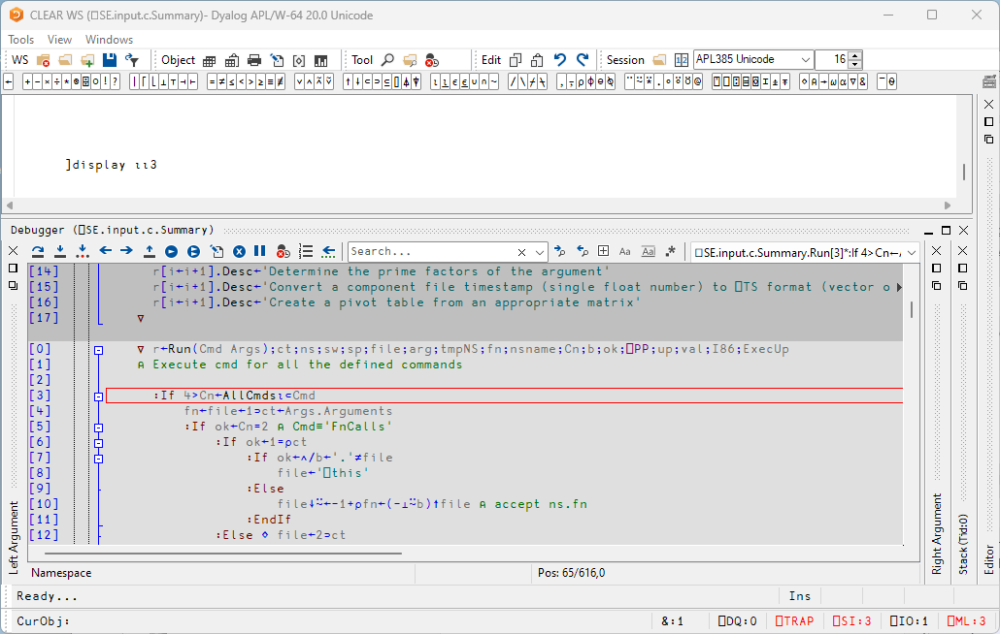
The next illustration shows the result of clicking Trace at this point. This caused the system to trace into ⎕SE.Dyalog.APLCart, the function called from ⎕SE.UCMD[35].
Notice how each function call on the stack is represented by an item in the SIstack window.
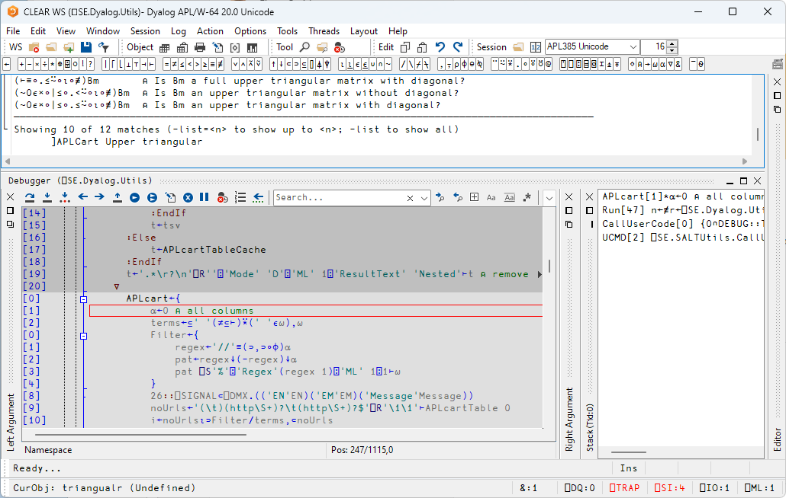
At this stage, the state indicator is as follows:
)SI
⎕SE.Dyalog.Utils.APLcart[1]*
⎕SE.input.c.APLcart.Run[47]
⍎
⎕SE.SALTUtils.CallUserCode[0]
⎕SE.UCMD[2]See also the section on inline tracing.
Controlling Execution
The point of execution may be moved by clicking the Back and Fwd buttons in the Trace Tools window or, using the keyboard, by pressing Ctrl+Shift+Bksp and Ctrl+Shift+Enter. Notice however that these buttons do not themselves change the state indicator or the display in the SIStack window. This happens only when you restart execution from the new point.
You can cut back the stack by clicking the <EP> button in the Trace Tools window. This causes execution to be suspended at the start of the line which was previously traced. The same effect can be achieved using the keyboard by pressing Esc. It can also be done by selecting Exit from the File menu on the Trace Window or by selecting Close from its system menu.
The <RM> button removes the Trace window and resumes execution. The same is achieved by the expression →⎕LC.
The <BH> button continues execution until the current function has run to completion and control has returned to the calling function. It leaves the Trace window displayed and allows you to watch execution progress.
Using the Session and the Editor
Whilst using the Tracer you can skip to the Session or to any Edit window and back again. While it is docked, you may resize the Tracer pane by dragging its title bar, and you may use the buttons provided to maximise, minimise and restore the Tracer pane within the Session window.
Unless you move it, the cursor is positioned to the left of the suspended line in the top Trace window.
Depending where the cursor is in the tracer window, pressing Shift+Enter (<ED>) or selecting Edit from the File menu may cause an edit window to open. If the cursor is in the first column of the Trace window, or on whitespace, the Editor is opened on function or operator on top of the stack. If the cursor in on a name, the Editor is opened on the name under the cursor (point-and-edit). With the cursor in any other location, no action is undertaken.
When you finish editing, the window reverts to a trace window with the new definition of the function or operator displayed.
You may also open a new edit window from within the Tracer using point-and-edit.
You can copy text from a trace window to the session for editing and execution or for experimentation.
It is possible to skip from the Tracer to the Session and then re-invoke the Tracer on a different expression.
Setting Breakpoints
Breakpoints are defined by ⎕STOP and may be toggled on and off in an Edit or Trace window by clicking in the appropriate column. The example below illustrates a function with a ⎕STOP breakpoint set on line [5].
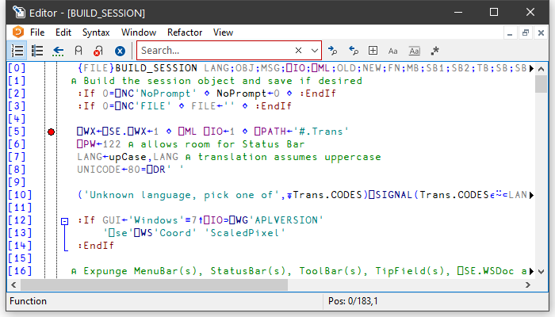
⎕STOP breakpoints set or cleared in an Edit window are not established until the function is fixed. ⎕STOP breakpoints set or cleared in a Trace window are established immediately.
Clearing All Break-Points
You can clear all breakpoints by pressing the above button in the Trace Tools window. This in fact resets ⎕STOP for all functions in the workspace.
Inline Tracing
Inline Tracing is an extension to the Tracer that allows you to step through the execution of individual primitives within expressions, examining intermediate results and arguments of sub-expressions. It enables an in-depth inspection of complex expressions typed directly into the session, and can be used in conjunction with the traditional tracing mode to skip over lines you're not interested in and step through primitive-by-primitive in complex expressions where required.
Inline tracing is tracing with the (approximate) granularity of primitives, although it does stop on non-primitives such as user-defined functions.
Getting started
There is a command <IT> called Inline Trace with the default keyboard shortcut ctrl+alt+enter which is used to trace inline.
To start inline tracing, position the cursor within an expression and do one of the following:
- enter the Inline Trace command (<IT>) in the session.
- select Action > Trace Inline… from the Session menu bar.
- select Action > Trace Inline… from the Session window's context menu.
- click the Next Primitive icon in the Tracer toolbar.
The Tracer opens with primitive tracing activated.
Example
In a Session, enter the expression (+/÷≢)⍳10 and start inline tracing.
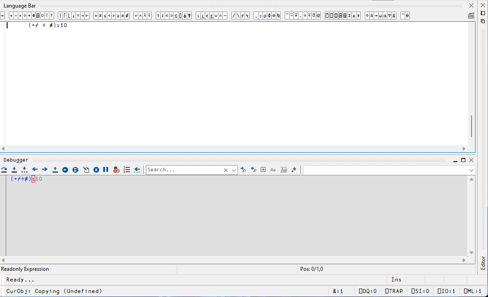
The red outline around the ⍳ in the Tracer shows the next primitive to be executed. Enter <IT> or click the Next Primitive icon in the Tracer toolbar to see how the execution progresses through the expression.
The Next Primitive icon is always present in the Tracer. The <IT> command lets you open a Tracer on an expression that has been typed directly in the Session.
Aspect Panes
When tracing inline, there are several more aspects of an expression that can be inspected beyond the default ones for left and right arguments, available under the Windows menu in the Tracer. These are divided into two sections; items 1-4 apply to the current function, and items 5-9 apply to the previously-executed function. They are:
-
Left Argument
As you step through an expression, this displays the left argument that is about to be passed to the highlighted function. Enabled (but minimised) by default.
-
Current Function
The function that is highlighted with a red outline in the Tracer. Opening a dedicated aspect pane allows you to select different presentation modes; see Aspect Pane Options for more information.
-
Right Argument
As you step through an expression, this displays the right argument that is about to be passed to the highlighted function. Enabled (but minimised) by default.
-
Axis Specification
The bracket axis applied to the current function (if any).
-
Previous Result
The result of the function evaluation immediately before the highlighted function.
-
Previous Left
The left argument of the function evaluation immediately before the highlighted function.
-
Previous Function
The function that was evaluated immediately before the highlighted function.
-
Previous Right
The right argument of the function evaluation immediately before the highlighted function.
-
Previous Axis
The bracket axis applied to the function evaluation immediately before the highlighted function (if any).
The relationship between these panes can be illustrated as
Left Arg ┐ ┌─ Axis Specification
│ ┌─┐ │ ┌──────┬─ Right Arg / Prev Result
a │B│[1] c D[2] e
└┬┘ │ │ │ └ Previous Right
Current Function ┘ │ │ └ Previous Axis
Previous Left ┘ └ Previous FunctionHints and Recommendations
Each of these options corresponds to a new pane in the Tracer. Having all panes enabled and visible can result in the interface becoming cluttered and information being hard to locate; Dyalog Ltd recommends enabling these on a case-by-case basis.
Aspect Pane Options
When a docked aspect pane is the focus, the Session's Options menu enables configuration of the behaviour of that aspect pane (for floating panes, the Options menu is within the aspect pane). The options are:
-
Show Status Bars
Whether status bars are displayed beneath the aspect pane.
-
Minimise until first use
Whether a saved layout should minimise aspect panes until they are activated. For complex layouts this can improve usability.
-
Show functions as trees
When using the Current/Previous Function panes, whether Show functions as trees uses the same display mode as
]Boxing on -trains=tree. If this option is not selected, the display mode is]Boxing on -trains=box. This can be helpful when investigating tacit expressions. -
Trace idioms
Whether specific expressions that the interpreter might treat as special cases (for example, idioms) are included when tracing inline. If this option is not selected, such expressions are treated as atomic functions.
-
Use Array Notation
Whether APL array notation is used to display arguments and results.
The following screenshot illustrates the effect of choosing Show functions as trees on the Current Function pane:
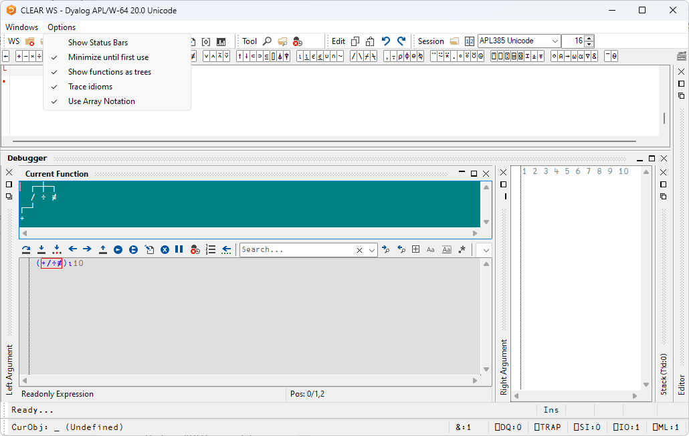
Tracing Diamond-Separated Expressions
A line of code can comprise a set of expressions separated by diamonds. In this situation, you might only want to trace into some of them and skip others; this can be done by using the command <ER> (by default, this is enter).
For example, consider a line that consists of three diamond-separated expressions; you want to skip the first two, and trace into the third one:
a ← 3 3⍴⍳9 ⋄ b ← ⍉a ⋄ a + bEnter the expressions in the Session, and start inline tracing. You should see:
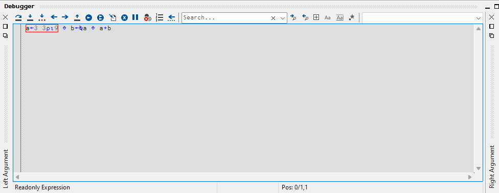
with the first expression highlighted (red outline). Enter <ER> (enter) to execute the single expression before the first diamond separator:
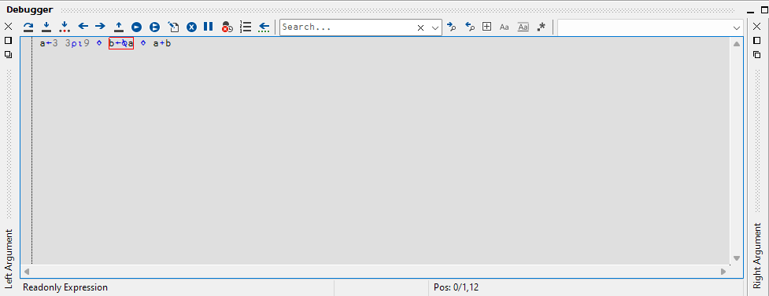
The second expression is now highlighted. Enter <ER> (enter) again to execute the second expression, then enter <IT> (ctrl+alt+enter) to start tracing the primitives in the third expression:
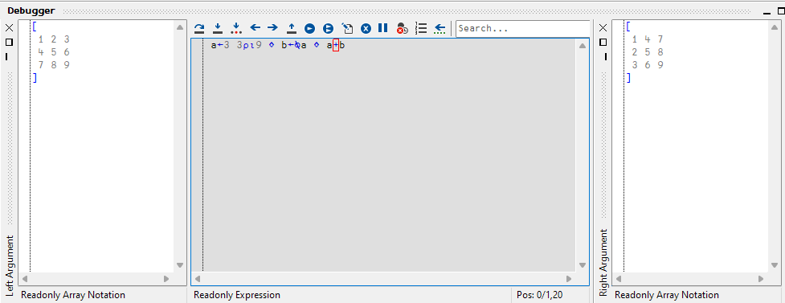